变基(rebase)和合并(merge)¶
- Version
- lin
- 2023-03-05
- git rebase
- review
在 Git 中整合来自不同分支的修改主要有两种方法：merge 以及 rebase。 在本节中我们将学习什么是“变基”，怎样使用“变基”，并将展示该操作的惊艳之处，以及指出在何种情况下你应避免使用它。
变基的基本操作¶
开发任务分叉到两个不同分支，又各自提交了更新: 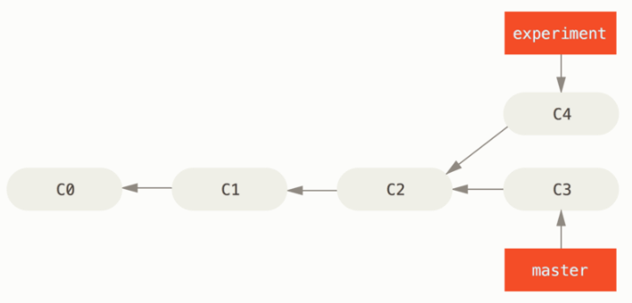
之前介绍过，整合分支最容易的方法是 merge 命令。 它会把两个分支的最新快照（C3 和 C4）以及二者最近的共同祖先（C2）进行三方合并，合并的结果是生成一个新的快照（并提交）。
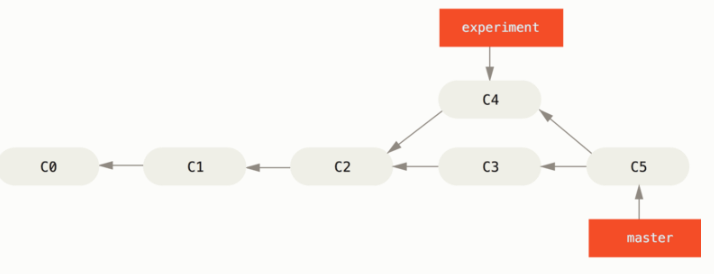
其实，还有一种方法：你可以提取在 C4 中引入的补丁和修改，然后在 C3 的基础上应用一次。 在 Git 中，这种操作就叫做 变基（rebase）。 你可以使用 rebase 命令将提交到某一分支上的所有修改都移至另一分支上，就好像“重新播放”一样。
在这个例子中，你可以检出 experiment 分支，然后将它变基到 master 分支上：
$ git checkout experiment
$ git rebase master
First, rewinding head to replay your work on top of it...
Applying: added staged command
它的原理是首先找到这两个分支（即当前分支 experiment、变基操作的目标基底分支 master） 的最近共同祖先 C2，然后对比当前分支相对于该祖先的历次提交，提取相应的修改并存为临时文件， 然后将当前分支指向目标基底 C3, 最后以此将之前另存为临时文件的修改依序应用。 （译注：写明了 commit id，以便理解，下同）
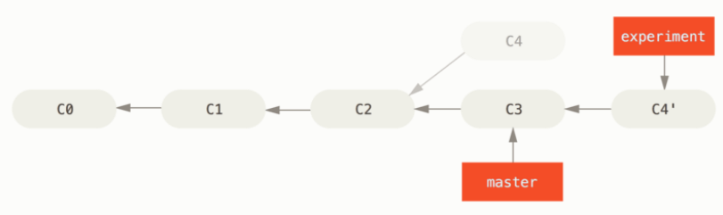
现在回到 master 分支，进行一次快进合并。
$ git checkout master
$ git merge experiment
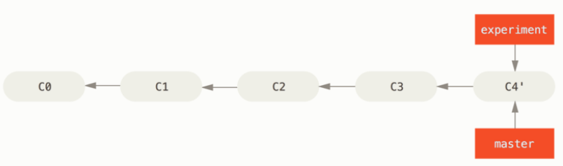 Figure 38. master 分支的快进合并 此时，C4' 指向的快照就和第一张图片 中 C5 指向的快照一模一样了。 这两种整合方法的最终结果没有任何区别，但是变基使得提交历史更加整洁。 你在查看一个经过变基的分支的历史记录时会发现，尽管实际的开发工作是并行的， 但它们看上去就像是串行的一样，提交历史是一条直线没有分叉。
一般我们这样做的目的是为了确保在向远程分支推送时能保持提交历史的整洁——例如向某个其他人维护的项目贡献代码时。 在这种情况下，你首先在自己的分支里进行开发，当开发完成时你需要先将你的代码变基到 origin/master 上，然后再向主项目提交修改。 这样的话，该项目的维护者就不再需要进行整合工作，只需要快进合并便可。
请注意，无论是通过变基，还是通过三方合并，整合的最终结果所指向的快照始终是一样的，只不过提交历史不同罢了。 变基是将一系列提交按照原有次序依次应用到另一分支上，而合并是把最终结果合在一起。
更有趣的变基例子¶
在对两个分支进行变基时，所生成的“重放”并不一定要在目标分支上应用，你也可以指定另外的一个分支进行应用。 你创建了一个主题分支 server，为服务端添加了一些功能，提交了 C3 和 C4。 然后从 C3 上创建了主题分支 client，为客户端添加了一些功能，提交了 C8 和 C9。 最后，你回到 server 分支，又提交了 C10。
假设你希望将 client 中的修改合并到主分支并发布，但暂时并不想合并 server 中的修改， 因为它们还需要经过更全面的测试。这时，你就可以使用 git rebase 命令的 --onto 选项， 选中在 client 分支里但不在 server 分支里的修改（即 C8 和 C9），将它们在 master 分支上重放：
$ git rebase --onto master server client
以上命令的意思是：“取出 client 分支，找出它从 server 分支分歧之后的补丁， 然后把这些补丁在 master 分支上重放一遍，让 client 看起来像直接基于 master 修改一样”。这理解起来有一点复杂，不过效果非常酷。
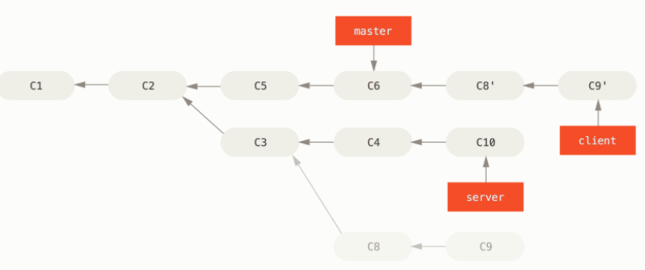
现在可以快进合并 master 分支了。
$ git checkout master
$ git merge client
接下来你决定将 server 分支中的修改也整合进来。 使用 git rebase [basebranch] [topicbranch] 命令可以直接将主题分支 （即本例中的 server）变基到目标分支（即 master）上。 这样做能省去你先切换到 server 分支，再对其执行变基命令的多个步骤。
$ git rebase master server
如图 将 server 中的修改变基到 master 上 所示，server 中的代码被“续”到了 master 后面。
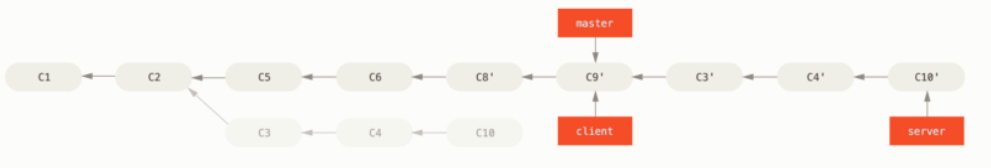
然后就可以快进合并主分支 master 了：
$ git checkout master
$ git merge server
至此，client 和 server 分支中的修改都已经整合到主分支里了， 你可以删除这两个分支，最终提交历史会变成图 最终的提交历史 中的样子：
$ git branch -d client
$ git branch -d server
变基的风险¶
变基得遵守一条准则:
如果提交存在于你的仓库之外，而别人可能基于这些提交进行开发，那么不要执行变基。
变基操作的实质是丢弃一些现有的提交，然后相应地新建一些内容一样但实际上不同的提交。 如果你已经将提交推送至某个仓库，而其他人也已经从该仓库拉取提交并进行了后续工作，此时，如果你用 git rebase 命令重新整理了提交并再次推送，你的同伴因此将不得不再次将他们手头的工作与你的提交进行整合，如果接下来你还要拉取并整合他们修改过的提交，事情就会变得一团糟。
让我们来看一个在公开的仓库上执行变基操作所带来的问题。 假设你从一个中央服务器克隆然后在它的基础上进行了一些开发。 你的提交历史如图所示：
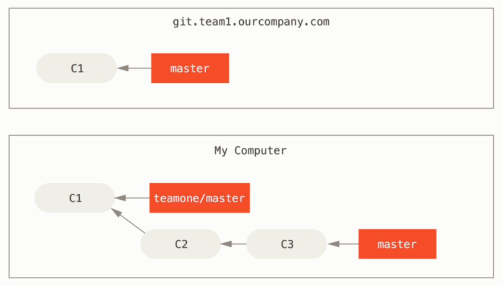
然后，某人又向中央服务器提交了一些修改，其中还包括一次合并。 你抓取了这些在远程分支上的修改，并将其合并到你本地的开发分支，然后你的提交历史就会变成这样：
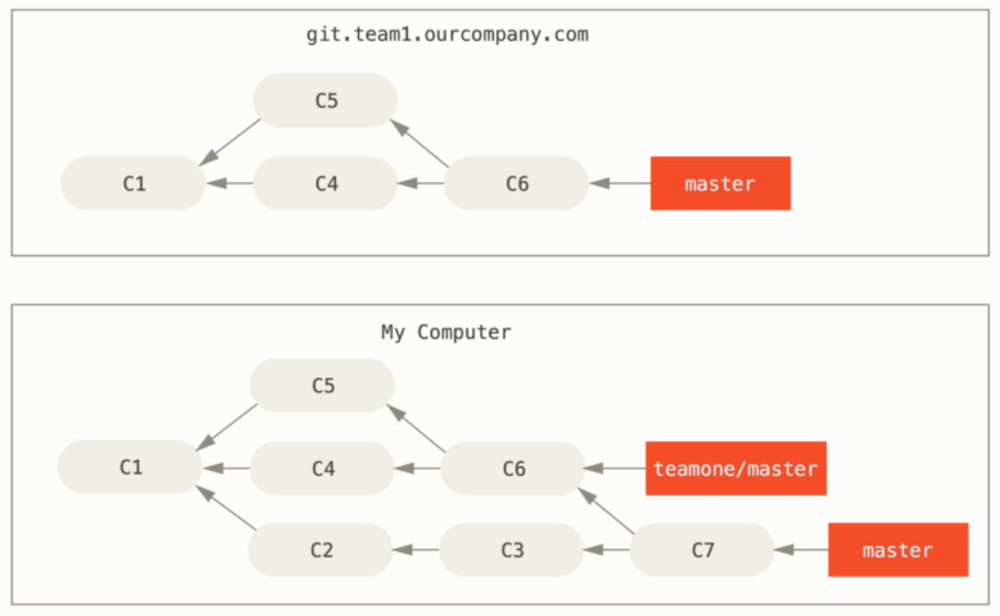
接下来，这个人又决定把合并操作回滚，改用变基；继而又用 git push --force 命令覆盖了服务器上的提交历史。 之后你从服务器抓取更新，会发现多出来一些新的提交。
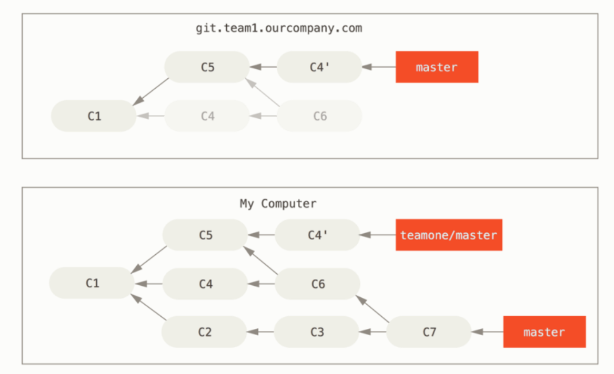
结果就是你们两人的处境都十分尴尬。 如果你执行 git pull 命令，你将合并来自两条提交历史的内容，生成一个新的合并提交，最终仓库会如图所示：
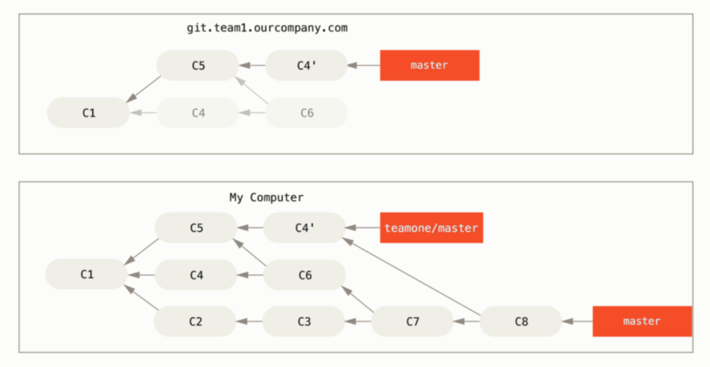
此时如果你执行 git log 命令，你会发现有两个提交的作者、日期、日志居然是一样的，这会令人感到混乱。 此外，如果你将这一堆又推送到服务器上，你实际上是将那些已经被变基抛弃的提交又找了回来，这会令人感到更加混乱。 很明显对方并不想在提交历史中看到 C4 和 C6，因为之前就是他把这两个提交通过变基丢弃的。
用变基解决变基¶
如果团队中的某人强制推送并覆盖了一些你所基于的提交，你需要做的就是检查你做了哪些修改，以及他们覆盖了哪些修改。
实际上，Git 除了对整个提交计算 SHA-1 校验和以外，也对本次提交所引入的修改计算了校验和——即 “patch-id”。
如果你拉取被覆盖过的更新并将你手头的工作基于此进行变基的话，一般情况下 Git 都能成功分辨出哪些是你的修改，并把它们应用到新分支上。
举个例子，如果遇到前面提到的 有人推送了经过变基的提交，并丢弃了你的本地开发所基于的一些提交 那种情境，如果我们不是执行合并，而是执行 git rebase teamone/master, Git 将会：
-
检查哪些提交是我们的分支上独有的（C2，C3，C4，C6，C7）
-
检查其中哪些提交不是合并操作的结果（C2，C3，C4）
-
检查哪些提交在对方覆盖更新时并没有被纳入目标分支（只有 C2 和 C3，因为 C4 其实就是 C4'）
-
把查到的这些提交应用在 teamone/master 上面
从而我们将得到与 你将相同的内容又合并了一次，生成了一个新的提交 中不同的结果，如图 在一个被变基然后强制推送的分支上再次执行变基 所示。
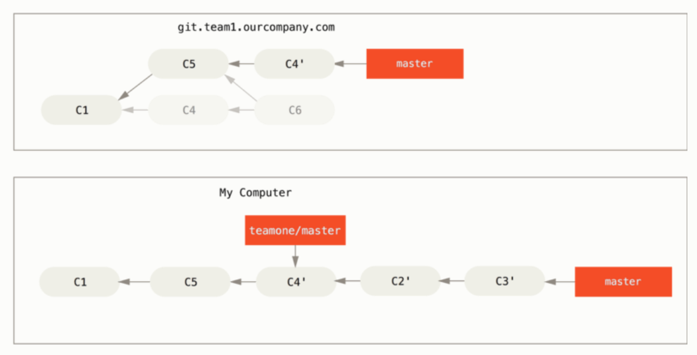
要想上述方案有效，还需要对方在变基时确保 C4' 和 C4 是几乎一样的。 否则变基操作将无法识别，并新建另一个类似 C4 的补丁（而这个补丁很可能无法整洁的整合入历史，因为补丁中的修改已经存在于某个地方了）。
在本例中另一种简单的方法是使用 git pull --rebase 命令而不是直接 git pull。 又或者你可以自己手动完成这个过程，先 git fetch，再 git rebase teamone/master。
如果你只对不会离开你电脑的提交执行变基，那就不会有事。 如果你对已经推送过的提交执行变基，但别人没有基于它的提交，那么也不会有事。 如果你对已经推送至共用仓库的提交上执行变基命令，并因此丢失了一些别人的开发所基于的提交， 那你就有大麻烦了，你的同事也会因此鄙视你。
如果你或你的同事在某些情形下决意要这么做，请一定要通知每个人执行 git pull --rebase 命令，这样尽管不能避免伤痛，但能有所缓解。
变基 vs. 合并¶
有一种观点认为，仓库的提交历史即是 记录实际发生过什么。 它是针对历史的文档，本身就有价值，不能乱改。 从这个角度看来，改变提交历史是一种亵渎，你使用 谎言 掩盖了实际发生过的事情。 如果由合并产生的提交历史是一团糟怎么办？ 既然事实就是如此，那么这些痕迹就应该被保留下来，让后人能够查阅。
另一种观点则正好相反，他们认为提交历史是 项目过程中发生的事。 没人会出版一本书的第一版草稿，软件维护手册也是需要反复修订才能方便使用。 持这一观点的人会使用 rebase 及 filter-branch 等工具来编写故事，怎么方便后来的读者就怎么写。
总的原则是，只对尚未推送或分享给别人的本地修改执行变基操作清理历史， 从不对已推送至别处的提交执行变基操作，这样，你才能享受到两种方式带来的便利。